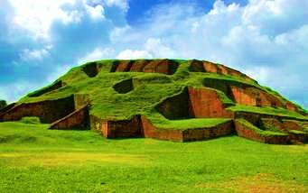

<p style="text-align: justify;">In the northern part, comprising the Rajshahi division, there are archaeological sites, including the temple city Puthia in Rajshahi; the largest and most ancient archaeological site,&nbsp; Mahasthanagr the single largest Buddhist Monastery in Norgaon. the most ornamental terracota Hindu temple, Kantaji Temple, and many rajbaris or palaces of old zamindars<strong>.</strong></p>
